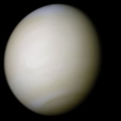

Gezegenler
Venüs

| Ekvator Bilinen yarıçapı | 6,051.8 ± 1.0 km (0.949 9 x Yer) |
| Basıklık | 0 |
| Hacim | 9.28×1011 km³ 0.857 Yer |
| Kütle | 4.868 5×1024 kg 0.815 Yer |
| Yoğunluk | 5,243 g/cm³ (0,95 x Yer) |
| Eksen eğikliği | 177,36° (ters dönüş) |
| Dönme süresi | −243.018 5 gün (ters yönde) |
| Yerçekimi | 8,87 m/s² (0,91 x Yer) |
| Kurtulma hızı | 10,36 km/saniye (0,93 x Yer) |
| Yüzey sıcaklığı ortalama | 735 K (464 °C) |